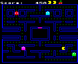

OpenVMS VAX Alpha History Free
The OpenVMS® operating system: a brief history, with links to VMS sites, freeware and books
© Kara Ottewell 1996-2026
Companion page: Kara’s VMS Tutorial, a beginner’s guide to OpenVMS and DCL, with example files to download.
Software for VMS is hard to come by these days, so dust off that VAXstation, fire up the Alpha, or boot SIMH, and help yourself. My VMS Free Software page is a treasure chest of Motif, X11 and command line programs that I wrote for, or ported to, OpenVMS on the VAX and Alpha, nearly all with full source code, and every zip file carries a PGP signature so you know it is just as I left it:
OpenVMS, or VMS as it is still affectionately known to us VMS stalwarts, is a high reliability, high security operating system, produced, if not always very well marketed, by Digital Equipment Corporation (DEC), then by Compaq and Hewlett-Packard, and since 2014 by VMS Software Inc. (VSI). Digital’s slogan for OpenVMS was “24×365”, which whilst not very catchy, is pretty accurate in what you can expect from a well configured VMS system.
It is quite common for VMS sites to go a couple of years between reboots, power supply allowing. Due to the gradations of privilege that can be granted to users or particular images, it is fairly straightforward to create a secure, robust environment to keep your business going “24×365”. Or “5×24×52” if you’re closed at weekends.
Have a look at my VMS Free Software Page, described at the top of this page, for various bits of software I have written for, or ported to, VMS. A list of VMS related web links, including more freeware, is at the bottom of this page. To see the latest information on OpenVMS, and where it is going next, look at the VSI roadmap.
If you want to run your own VMS system, VSI’s Community License lets you run OpenVMS, with its compilers and layered products, free of charge for learning, open source development and sharing knowledge of the system. It replaced the old hobbyist programme, under which a CD with VMS, compilers for C++, C, Pascal, BASIC, Fortran and COBOL, and licences for lots of layered products, including clustering and TCP/IP, used to cost about $30 from Montagar Software. HP ended that programme in 2020. The easiest route today is to run the x86-64 version of OpenVMS in a virtual machine on your PC, though it is still great fun to run VMS on a real VAX or Alpha, and second-hand ones turn up on eBay. Island Computers, who once sold brand new Alphas to hobbyists for $499, still sell and support Alpha and Integrity systems.
Nemonix Engineering also specialize in hardware, software and repair of VMS systems, maintenance, and hardware upgrades, and used to welcome business from hobbyist VMS systems too.
If you want to write a CD or DVD from a VMS system, OpenVMS V8.3 onwards can do it itself with the COPY/RECORDABLE_MEDIA command. Before that there was an excellent commercial program, DVDwrite, from Dr. Eberhard Heuser-Hofmann, which supported VAX, Alpha and Integrity (Itanium) systems and a good number of DVD drives, and which Eberhard kindly made available free for VMS hobbyists, though its web site has since disappeared. ACARD’s SCSI-to-IDE and SATA bridges let an older SCSI-only VAX or Alpha use a modern drive.
For some good advice on connecting your VMS system to the internet, email me. You can find my address from my PGP public key, as described in the PGP Key and Contact Information section of my KLO Software page. I started off using a 3Com Courier modem, running SLIP on a VAXstation 4000 VLC to connect to Demon Internet in the UK (who gave you a static IP address), but now have rather faster (!) cable internet, and my VMScluster lives behind a firewall, with port forwarding to map services to the appropriate places.
To log in to a VMS system from a PC, use SSH, which encrypts everything you type, your password included, rather than Telnet, which sends it across the network as plain text. Windows has an SSH client built in, and the free PuTTY SSH and Telnet client is a good VT terminal emulator, including the keypad that the VMS editors use. On the VMS side, the SSH server comes with VSI’s TCP/IP Services and with VSI OpenSSH. My VMS Tutorial shows how to log in both ways.
The VAX-11/780 was the first computer to run the VMS operating system. It was announced in October 1977, and cost about $200,000, which was a lot of money in those days. Version 1.0 of VMS shipped to customers in 1978.
The internal code name for this machine was Star, and the code name for VMS was Starlet, which is why the system library searched for unresolved symbols at LINK time is called SYS$LIBRARY:STARLET.OLB. The venerable 11/780 was followed by the 11/750 in 1980, and the rather underpowered, but lowest cost to that date, VAX-11/730 in 1982. Clustering was unveiled in 1983, and is supported up to 96 nodes, though in fact some places succeeded in clustering over 200 machines. The first VAX workstation, the appropriately named VAXstation I, was introduced in 1984, and I remember using one of the first of these at CERN shortly after that date. There is a great VAX timeline, made for the 20th anniversary of VAX and VMS in 1997, showing the rest of the VAX evolution.
If you want a VAX system of your own, I would suggest one of the VAXstation 4000 series of workstations, such as the VLC, the model 60 or the model 90. I find that Seagate SCSI disks work very well with these models. These workstations are small, self-contained and don’t use much power. They have a Motif/X Window user interface, are very nicely built, and fun to run. You will probably want to find a compatible CD-ROM drive from which to install VMS: it needs to support 512 byte blocks as well as 2048 to boot VAX VMS from CD, whereas Alphas can use either. I use a Matsushita CR-506 CD-ROM drive, and a Seagate ST32550N system disk. If you don’t have the space for a real VAX, the Open SIMH emulator will pretend to be one for you.
What is an Alpha ? The Alpha AXP chip was DEC’s 64-bit RISC microprocessor, designed for the next millennium (so DEC said) ! Because of its cunning PALcode, Alphas could run VMS, Unix, Linux or Windows NT. The SRM console firmware is used if the Alpha is to boot VMS or Digital Unix, and the ARC console firmware is needed for Windows NT – assuming that you have the licences to run the software.
The RISC (Reduced Instruction Set Computer) CPU has 32 integer and 32 floating point registers, all 64 bits wide, on-chip instruction and data caches, and multiple issue pipelining. To take advantage of these features the compiler has to be particularly clever in scheduling the instruction stream, which leads to the criticism from some people that RISC really stands for “Relegate the Important Stuff to the Compiler” !
The Alpha chip is designed to give the most efficient memory access for naturally aligned data. Hence it is a good idea, when declaring structures or common blocks, to make quadwords (8 bytes) start at quadword offsets, longwords (4 bytes) start at longword offsets, and words (you guessed it – 2 bytes) start at word offsets. Occasionally this means adding padding bytes, though this can usually be avoided by declaring members in decreasing order of size. Instructions to load and store single bytes and words were added with the 21164A chip, and are supported on that and later Alpha chips.
Due to economic considerations, Alpha development ended with the EV7, and Compaq, and then HP, ported VMS to Intel’s 64-bit Itanium, which HP sold as its Integrity servers. VSI has since ported VMS to x86-64, so the same VMS now runs on a fourth processor architecture.
If you want an Alpha of your own, I would recommend one of the Alpha workstations, such as the Personal Workstation 433au, 500au or 600au, or the AlphaServer DS10, the DS20 or the AlphaStation XP1000 if you are feeling a bit richer. See Island Computers for some great deals, and for spares and upgrades. I should perhaps add that I am not in any way affiliated to Island Computers, other than as a satisfied customer.

Unfortunately, these don’t exist. A BBC Micro emulator that runs on VMS systems does, however (almost as good) ! I ported James Fidell’s XBeeb emulator to VAX and Alpha. This can be found on my Free Software page.
If you have never used a VMS system before, a good place to start is my VMS Tutorial. It was brought up to date in 2026, and covers logging in with SSH, DCL, files, the EVE and EDT editors, the debugger, command files, object libraries and batch jobs, with example files to download. David L. Cathey’s DECUS presentation on processes stuck in RWAST is here too, for the more adventurous.
OpenVMS is VMS, it’s just those marketing boys trying to confuse us. Seriously though, [Open]VMS does conform to more of the POSIX standard than you might think.
Windows NT was available for the EISA and PCI bus based Alphas. NT allegedly stands for New Technology, but it’s a bit suspicious that the leader of Microsoft’s Windows NT team was Dave Cutler, who contributed large parts of VMS when he worked for Digital, and if you add one to each letter of VMS, you get WNT ! Windows NT, and the versions of Windows descended from it right up to today’s, have many of the features that VMS programmers know and love, like kernel threads, mutexes, semaphores, critical sections and numerous system service calls to play with.
You’ll find a WHOIS client for Windows and VMS on my Free Software Page, and more recent programs on my KLO Software pages. Windows NT 4.0 was the last version of Windows for the Alpha, as Compaq stopped supporting Windows on the Alpha in 1999, so a dual boot Alpha could run Windows NT 4.0 and VMS, but nothing newer. Itanium came closest to bringing the two together again: HP Integrity servers could run either OpenVMS or Windows Server, until Microsoft dropped Itanium after Windows Server 2008 R2.
If you have an Alpha machine that you wish to swap between Windows NT and VMS, you will need to change the console to the ARC (Windows NT) or the SRM (OpenVMS) console. Island Computers used to publish excellent instructions for doing this, and sold the hardware for upgrading Personal Workstation 433a, 500a and 600a machines, which can run Windows NT or Linux, to 433au, 500au and 600au machines, which can run Windows NT, Linux, Tru64 Unix and OpenVMS. For some models of Alpha, such as the AlphaStation 255, only one console at a time can be held in flash ROM, so switching also involves reloading the firmware. Newer models like the 600au can have both resident at the same time. The OpenVMS FAQ, which used to be posted regularly to the comp.os.vms newsgroup, describes the steps for each model.
Digital Unix was formerly known as DEC OSF/1, since it was designed to meet the IEEE POSIX (1003) standards, intended to establish a standard operating system interface and environment based on Unix, and was endorsed by the Open Software Foundation. Compaq renamed it Tru64 UNIX, and HP ended support for it in 2012. I am not a Unix fan, as you can tell from my web pages.
Yezerski Roper Ltd. employed a whole bunch of clever, talented people who could do just about anything with VMS and Windows. Sadly they are no more, and like Merlin, have disappeared into the Pennine Hills until such time as the land is in time of peril, and needs their magic again.
Here are a few of my favourite web pages related to VMS. Many of the ones in earlier versions of this page have long since disappeared, along with DEC.
Thanks to David L. Cathey of Montagar Software Concepts, I have also been able to add his DECUS presentation on how to delete a process stuck in RWAST, which I converted from PostScript to HTML. It contains numerous useful tips and information, and some example code in MACRO-32. Read David’s Resource Waits in the OpenVMS Operating System, also known as What to do when you R-WASTed by OpenVMS.
This bibliography is based on postings to the Info-VAX mailing list by Professor David D. Miller, Arne Vajhøj and others, with additions, corrections, and formatting by Richard B. Gilbert. Some books may appear in more than one category, and many are now out of print, though most turn up second-hand. The VSI documentation above is the place for anything that has changed since they were written. This is an approved Amazon.com Associates site, and if you click on the linked titles below it will take you straight to the Amazon page for that book.
See also Kara’s VMS Tutorial, a beginner’s guide to OpenVMS and DCL, with example files for its exercises, Kara’s C Tutorial, an introduction to C for programmers who already know another language, particularly DEC FORTRAN, and Kara’s STL Tutorial, a Monty Python-themed tutorial on the C++ Standard Template Library.
If you have enjoyed this page, please have a look at my KLO Software pages. They describe a family of free Windows programs, all available from the Microsoft Store and each with its own help page: BeebRFSMaker, BeebRFSTool and BeebFileUtilities for BBC Micro enthusiasts, which view disk images, decode tokenised BASIC and pack files into compressed sideways ROMs; KOContour, which turns elevation data into contour maps; KOBrot, a Mandelbrot and Julia set explorer that redraws the matching Julia set live as you move the pointer; and SnapDragger, which tidies a folder of photographs and video clips into dated, sorted folders with an HTML contact sheet. Suggestions, bug reports and ideas for new features are always welcome.